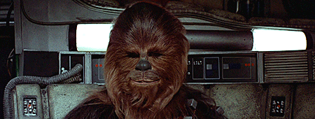

# Une année à 80%
### projets et bilan
En février dernier, j'ai fait une demande pour travailler à 80%, mais pourquoi ?
- Trop peu de temps pour mes projets
- => frustration
- => impatience d'arriver aux vacances... improductives
L'idée
- Employer ce temps pour faire de la photo
- Profiter de découvrir des coins simpas
- Mais pas sans fil rouge...
La vraie solution
- Trouver quelque chose qui rapporte (un peu)
- Qui me laisse du temps, donc sans effort
- Qui assure une rentrée régulière

(Investissement important de départ)
- Mises à jour occasionnelles
- Rentrées annuelles sur long terme
- Du temps pour vivre ma passion...
Avantages
- Du temps libre
- Du temps libre
- Du temps libre
Désavantages
- Moins de sous
- Du temps libre
Dans mon travail chez Antistatique
- + de motivation/implication/concentration
- - de frustration
- Plus en mal de vacances
- Meilleur rythme de travail
Dans ma vie
- Du temps pour mes projets -> épanouissement
- Un esprit plus libre